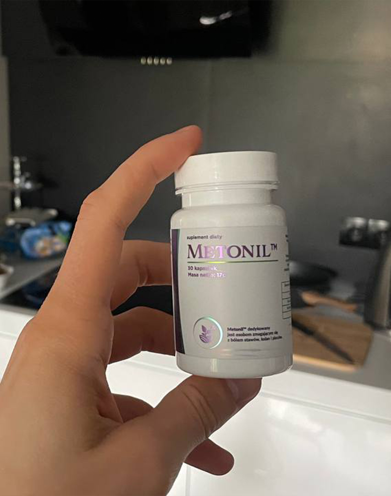

MEDYCYNA ONLINE
"Polskie metody leczenia stawów powodują jedynie zdziwienie". Znany niemiecki reumatolog udzielił szczerego wywiadu polskiemu dziennikarzowi
Reumatologii i Neurologii
Jest tylko jedna przyczyna chorób stawów, ale Polscy lekarze całkowicie ją ignorują.

Dr. Karl Braun: “W Polsce choroby stawów są nadal leczone przestarzałymi i nieskutecznymi lekami, które wymagają ciągłego stosowania przez całe życie. W Niemczech stawy są leczone tak samo łatwo, jak katar”.
W ubiegłym roku Karl Braun przyjechał do Polski, aby przestudiować doświadczenia swoich polskich kolegów. Według niego, to, co zobaczył w Polsce, nie da się wytłumaczyć. W naszym kraju, zdaniem Karl, reumatologia utknęła w połowie ubiegłego wieku.
Po głośnych wystąpieniach w Niemczech dr Karl Braun zgodził się udzielić
wywiadu polskiej publikacji. Co słynnemu lekarzowi nie spodobało się w
polskiej medycynie? I dlaczego twierdzi, że obywatele Polski z chorymi
stawami nigdy nie będą mogli stać się zdrowi?
- Rozmawiając z niemieckimi dziennikarzami, Pan powiedział, że to, co zobaczył w Polsce, zszokowało Pana. Czy mógłby Pan to skomentować?
- Chcę od razu powiedzieć, że mam dobre podejście do Polski, kultury
polskiej i obywateli Polski. Ale stan, w którym znajduje się medycyna,
naprawdę wywołuje szok wśród niemieckich lekarzy. Państwa lecznictwo
jest opóźnione o co najmniej 20, a może o nawet 30 lat. W każdym razie,
o leczeniu chorób stawów i układu mięśniowo-szkieletowego można
powiedzieć, że taka nauka jak reumatologia w Polsce nie istnieje.
Proszę zobaczyć, co lekarze oferują do leczenia stawów w Polsce: maści
Viprosal, Dolgit, Voltaren\Fastum, Diclofenac, Teraflex, Nurofen i inne
podobne leki.
Jednak leki te NIE LECZĄ STAWÓW I CHRZĄSTEK, łagodzą jedynie objawy
choroby - ból, zapalenie, obrzęk. Teraz proszę wyobrazić sobie, co
dzieje się na poziomie organizmu. Kiedy człowiek przyjmuje pigułkę,
stosuje żel znieczulający lub wykonuje zastrzyk, ból ustępuje. Ale gdy
tylko lek przestaje działać, ból natychmiast powraca.
A ból jest ważnym sygnałem, sygnalizuje, że w stawie zachodzi proces
patologiczny. Tylko poprzez zagłuszanie bólu, dotknięte stawy są
narażone na jeszcze większe niszczące skutki. Proces niszczenia jest
przyspieszany 3-5-krotnie i ostatecznie prowadzi do nieodwracalnych
zmian, do całkowitego unieruchomienia i niepełnosprawności.
Ta metoda walki z bólem stawów w Niemczech nie jest stosowana od ponad
20 lat. Środki przeciwbólowe stosuje się tylko w skrajnych przypadkach,
bardzo dokładnie i ostrożnie. W Niemczech są sprzedawane wyłącznie na
receptę i pod ścisłą kontrolą
Tak zwane “chondroprotektory” są całkowicie zakazane jako
całkowicie fałszywe i bezużyteczne leki.
Państwa lekarze i farmaceuci po prostu kaleczą ludzi! Oczywiste jest to,
że ciągłe sprzedawanie po wysokich cenach środki na wyeliminowanie
objawów są znacznie bardziej opłacalne, niż leczenie choroby raz na
zawsze, przywrócenie rozpadającego się stawu, ale nie wolno tak
robić.
- A jak wygląda leczenie stawów w Niemczech?
- Wszyscy niemieccy lekarze, od profesorów reumatologii po zwykłych
terapeutów i felczerów, od dawna zrozumieli, że nie należy usuwać
konsekwencji choroby, ale jej przyczyny. To jest klucz do pełnego,
szybkiego i bezpiecznego leczenia. A jaka jest główna przyczyna
uszkodzenia stawów? Jest to osadzanie orto-soli z powodu niedokrwienia i
niewydolność krążenia mazi stawowej.
Urat jest prawdziwą solą kwasu moczowego, przyczyną dny moczanowej.
Osteofity - kalcynowane sole, są przyczyną pozostałych 93% chorób stawów
i kręgosłupa. Wszystkie rodzaje zapalenia stawów i artrozy,
osteochondroza, osteoporoza, reumatyzm, zapalenie kaletki maziowej, a
nawet ganglion. Wszystkie te choroby mają jedną przyczynę - osady
osteofitów.
Sole, osadzane na powierzchni stawu, podobnie do papieru ściernego,
wyostrzają otaczającą tkankę - kości i chrząstkę. Rosnące kryształy
orto-soli zaczynają uszkadzać tkankę mięśniową, ścięgna, naczynia
krwionośne i włosowate. Powodując tym stan zapalny, infekcje, obrzęk i
silne bole.
W zaniedbanych przypadkach duże nagromadzenie orto-soli może łatwo
oddzielić część kości podczas nagłego ruchu, powodując w ten sposób
całkowitą niepełnosprawność i trwałe unieruchomienie stawu.
Bardzo niebezpieczne jest błędne przekonanie, że wapń jest pomocny dla
stawów. Tak, wapń jest dobry, ale dobry tylko dla ZDROWYCH stawów. Kiedy
stawy już bolą lub chrupią, oznacza to, że utworzyła się już w nich
warstwa osteofitów, a wapń, oprócz wzmocnienia tkanki kostnej, wzmacnia
również sole osteofitów, pogarszając i przyspieszając ich wzrost.
Dlatego niemieccy reumatolodzy przede wszystkim przywracają krążenie
krwi w chorym stawie, tak że orto-sole gromadzone przez lata są z niego
usuwane. To z kolei przywraca normalne krążenie mazi stawowej i
rozpoczyna proces przywracania tkanek stawowych.
W rzeczywistości stawy ludzkie są bardzo regeneracyjne, są one w stanie
samodzielnie się regenerować, jak ogon jaszczurki. Trzeba im tylko
trochę w tym pomóc - uwolnić je od “przyklejających się” orto-soli, a
proces zostanie uruchomiony samodzielnie.
Kiedy zobaczyłem polskie statystyki medyczne, moje włosy stanęły na
głowie. Czy wiesz, co jest najczęstszą przyczyną niepełnosprawności w
Polsce? To nie jest rak, ani AIDS, ani cukrzyca, ale artroza!
Najprostsza artroza, która jest leczona w Niemczech przez 2-3 tygodnie
nie najdroższym lekiem, a w Polsce prowadzi do niepełnosprawności!
W dzisiejszych Niemczech choroby stawów nie są uważane za niebezpieczne
patologie, chyba że oczywiście mówimy o poważnych uszkodzeniach
urazowych: złamaniach, kruszeniu, pęknięciach itp. Ból i stany zapalne w
stawach mówią tylko o tym, że są one “zanieczyszczone” solami i
czas je oczyścić. Po miesięcznym kursie “oczyszczania” stawy
wracają do normy, a o problemach można zapomnieć na następną dekadę.
Choroby stawów, które w Polsce próbują “leczyć” osobno, w Niemczech od
dawna połączone są w jedną chorobę “Articulatio de sales”
(utwory solne w stawach). Ta choroba obejmuje:
- Dna moczanowa
- Osteochondroza
- Zapalenie błony maziowej
- Reumatyzm
- Zapalenie stawów
- Artroza
- Zapalenie kaletki
- Ganglion
- Osteoporoza
To jest bardzo krótka lista, ale pozostałe choroby są tylko podgatunkiem
tych głównych dziewięciu patologii. Na przykład, koksartroza jest
podgatunkiem artrozy itp.
I cała ta długa lista chorób jest leczona bardzo łatwo, poprzez banalne
czyszczenie stawów. Absolutnie bezpieczne, które nie wymaga nawet pomocy
medycznej i jest przeprowadzane w domu
- Jak “oczyszczają” stawy w Niemczech?
- Dziś istnieją specjalne środki, które są przeznaczone do czyszczenia
stawów z osadów soli. Na przykład, bardzo dobrym środkiem jest
. Zawiera kadzidłowiec w specjalnej, lekkostrawnej formie, dzięki czemu
środek jest bardzo skuteczny.
Kolejną ważną zaletą jest to, że zawiera hydrolizat kolagenu
wołowego dopasowany w celu poprawy funkcjonowania tkanek stawowych.
Oznacza to, że ma kompleksowy wpływ na kośċ i chrząstkę, maź stawową,
włókna mięśniowe, tkanki więzadeł i ścięgien. To pełna gama złożonych
efektów.
składa się z wielu elementów. Nie wymienię ich wszystkich,
wymienię tylko te główne: kadzidłowiec, kwas hialuronowy, hydrolizat
kolagenu wieprzowego, cynk.
- , o ile wiemy, nie jest sprzedawany w polskich
aptekach?
- Faktem jest, że nie. Polscy lekarze wolą "karmić" ludność tonami
środków znieczulających i chondroprotektorami, niż angażować się w
rzeczywiste leczenie.
Jednocześnie nie ma wątpliwości, że polscy reumatolodzy, przynajmniej
ci, którzy są zainteresowani w zaawansowanych metodach leczenia, wiedzą
o i jego zdolnościach regeneracyjnych. Ale nie ryzykują
przepisania środka, którego nie ma na liście Ministerstwa Zdrowia.
O ile mi wiadomo, producent chciał wejść na rynek polski. Ale
nie pozwolono mu na to, ponieważ wynaleziono setki barier (biurokracja w
Polsce jest nie do wykorzenienia). Jest to zrozumiałe - jeśli ten środek
pojawi się w aptekach, polscy farmaceuci poniosą ogromne straty.
Rzeczywiście, dzisiaj farmakologia to biznes! Nawet w Niemczech. Ale w
Niemczech biznes jest kontrolowany przez państwo, a tego, co dzieje się
w Polsce, nie mogę ocenić, wiedzą Państwo lepiej.
- Co Pan poleciłby osobom z bólem stawów mieszkającym w
Polsce?
- Zwykli ludzie, zwłaszcza ludzie po 40tce, najbardziej cierpią z powodu
zacofania polskiej medycyny. To nie ich wina, tak po prostu działa
system opieki zdrowotnej.
Ale na szczęście wyjście istnieje. Uzgodniliśmy z Polskim Centrum
Reumatologii możliwość dystrybucji tego leku wśród wszystkich obywateli
Polski mających problemy ze stawami. Utworzono specjalną oficjalną
stronę internetową, za pomocą której każdy mieszkaniec Polski może
otrzymać z 55% zniżką.
Zajmujemy się dystrybucją
od 3 miesięcy. Z tej okazji skorzystało kilka tysięcy obywateli
Polski. Prosimy wszystkich, którzy otrzymali , aby ocenili, jak
dobrze lek pomógł im w skali od 1 do 10. W chwili obecnej w badaniu
wzięło udział ponad 3'500 osób, a średnia ocena leku wynosi 9,82 na 10
punktów.
Jak widać, pomógł tysiącom obywateli Polski uzyskać mobilność i
pozbyć się bólu prawie za darmo! Ty też możesz znaleźć się wśród
nich.
- Jak długo potrwa ulgowa dystrybucja tego cudownego
preparatu?
- Do zakończenia przydzielonej partii. Ale chcę od razu ostrzec, że
pozostało bardzo mało ulgowych preparatów. Zamówienia pojawiają się
bardzo szybko. Działa poczta pantoflowa, ludzie przekazują sobie
informacje, doradzają znajomym i zamawiają środek dla krewnych. Nawet
nie spodziewaliśmy się, że informacje o rozniosą się tak szybko
po całej Polsce.
Dopóki promocja na nie zakończy się, polecam wszystkim osobom,
które mają problemy ze stawami, pozostawić aplikację o otrzymanie
z rabatem na stronie. I zawsze pamiętajcie, że nasze zdrowie
jest najważniejsze i najcenniejsze, co posiadamy.

Dziękuję. Bardzo pomocne! Zamówiłam . Konsultant powiedział, że jeszcze jest, ale szybko się kończy. Pomyślnie trafiłam na tę wiadomość.

Mam 62 lata. Kolana bolą od 50 lat. Ostatnio ból stał się całkowicie
nie do zniesienia. Znajomy lekarz (przyjaciel z dzieciństwa)
powiedział o tym programie i doradził mi, aby przepisali mi ten
środek, około 4 miesiące temu. środek jest rewelacyjny!

Jestem jednym z tych, którym udało się wypróbować . On jest
naprawdę najlepszy. Cierpię na artrozę od dawna - ta choroba dręczy
mnie od 7 lat. Byłem już gotowy brać pigułki i kłuć się przez całe
życie, ale w końcu po kursie ból ustąpił. Zupełnie ustąpił.
Polecam wszystkim - on pomoże!


Zostawiłam aplikację. Obiecali, że za 4 dni będę mogła otrzymać
przesyłkę. No to czekam
Moim zdaniem, głównym celem lekarzy jest odebranie nam pieniędzy w jak największym stopniu. Niczym więcej nie są zainteresowani. Co pół roku kłułam się. W tym roku na jesieni także mi kazali, ale bałam kłuć się. W końcu nawet nie patrzyłam na to, jakie inne choroby mam i jak wpłynie to na organizm. Bezwzględna obojętność i przepisywanie tylko tych leków, za które otrzymują od firm – to właśnie zachowanie lekarzy. Może w innych miejscach jest nie tak źle, ale nie jestem pewna. To jest nasza medycyna. A jeśli chodzi o ten środek, to dobra wiadomość!

Tak, w naszym kraju możesz tylko umierać. Mam 58 lat. Już dwie
trzecie rówieśników zmarło, reszta ledwo się porusza z powodu
wiecznego bólu nóg, ramion, pleców. Warto zastanowić się chwilę nad
tym

Środek jest naprawdę dobry. Brałem go latem ubiegłego roku (syn
przywiózł z Berlina). Ból minął! Nadal nie ma objawów. Sam jestem
zaskoczony. Czuję się świetnie Polecam ten środek wszystkim.


Również mam doświadczenie w leczeniu , też pozytywne. Ciągle brałam zastrzyki, a po latam drugi miesiąc!

Spodobał mi się również ten lek. Najpierw używałam etodolaku, potem meloksykamu + ketorolu. Ale nagle przestały działać. Potem poszła do lekarza, a on doradził mi wypróbowanie nowego leku (młody lekarz prawdopodobnie nadal wierzył, że medycyna powinna być przeznaczona dla ludzi, a nie do pompowania pieniędzy!). pomógł mi od razu - ból prawie natychmiast zniknął, ale zaczęłam przyjmować go zgodnie z zaleceniami lekarza. Po 3 tygodniach w ogóle zapomniałam o bólu. Czuję się cudownie, jak w młodości!

Sąsiad z daczy, ma 72 lata, często narzekał na krzyż. Ale w ostatnim miesiącu widzę go aktywnego i wesołego. Powiedział mi, że używał , jego wnuk przywiózł go skądś.

Podczas gdy czytałam na forach opinie o , zobacz, a kończy
się na oczach! Dzięki Bogu udało mi się wypełnić formularz. Udało mi
się też uzyskać go w ulgowej cenie, co też jest miłe.

Dowiedziałem się o na jednym z forów dla osób cierpiących na chore stawy. Tam wielu chwali się swoimi wynikami. Postanowiłem też zamówić. Używam tylko 4 dni i już zauważalne ulepszenia we wszystkim. Ból minął całkowicie, chrupnięcie stało się zauważalnie cichsze, niewielki obrzęk nadal utrzymuje się, ale jest znacznie lepiej niż było. Ogólnie rzecz biorąc, zgodnie z wynikami kursu napiszę, ale początek jest przyjemny.

Dziękuję. Wypisałam dla siebie i dla męża. Zapytałam konsultanta, kiedy będzie sprzedawany w aptece - powiedział, że nie wiadomo. Ponieważ jest to może jedyny sposób, aby wypróbować ten lek.

Dziękuję!